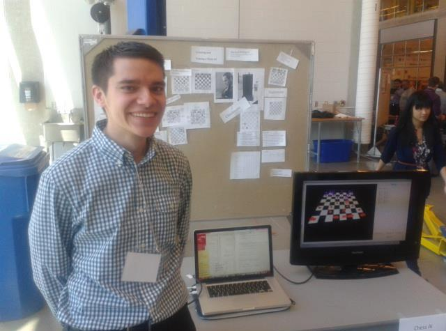
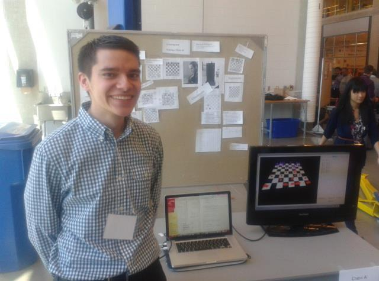

Hello!
Welcome to my site! My name is Michael Weingert, I am a fourth year Mechatronics Engineering student at the University of Waterloo in Canada.
I am an aspiring software engineer with a passion for Artificial Intelligence and Machine Learning. I also enjoy playing soccer, and watching movies and television.
You can see a brief synopsis of my technical interests and skills below, but feel free to navigate around for more indepth knowledge. You can also view my linkedIn and github accounts. I can be reached via email on my contact page.
 

 Artificial Intelligence
Artificial Intelligence Graphics Development
Graphics Development Artificial Intelligence is going to be the future of the technological world as we aim to create more intelligent and adaptive systems. I aim to be at the forefront of the new technology, and as a result I have aimed to train myself in Artificial Intelligence and Machine Learning through both course work and personal projects/research. As the amount of data in the world increases, it is important to be able to sift through, and learn from it. Please see my research and portfolio sections for more information on related projects, and my education section for a more detailed look at coursework.
Artificial Intelligence is going to be the future of the technological world as we aim to create more intelligent and adaptive systems. I aim to be at the forefront of the new technology, and as a result I have aimed to train myself in Artificial Intelligence and Machine Learning through both course work and personal projects/research. As the amount of data in the world increases, it is important to be able to sift through, and learn from it. Please see my research and portfolio sections for more information on related projects, and my education section for a more detailed look at coursework.